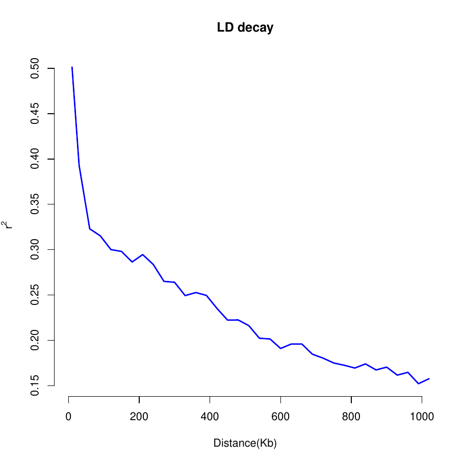

Linkage disequilibrium (LD) measures non-random association between alleles at different loci. This workflow calculates pairwise (r^2) for SNP pairs, derives physical distance from their base-pair positions, then summarizes mean (r^2) in 10-kb bins.
PLINK must be installed and accessible at the path specified in the script. LD calculation can produce a very large file, so use a clearly stated window and retain QC-filtered variants.
Analysis workflow
Genotype QC → pairwise r² → distance bins → curve
R code
Run PLINK and plot mean LD by distance
library(dplyr)
library(ggplot2)
# Update this path for your computer
plink_path <- "C:/Users/DELL/Documents/plink_win64/plink.exe"
vcf_file <- "5OK_AM17.vcf"
stopifnot(file.exists(plink_path), file.exists(vcf_file))
run_plink <- function(args) {
system2(plink_path, args = args)
}
# Convert VCF to PLINK binary format after marker QC
run_plink(c("--vcf", vcf_file,
"--maf", "0.05",
"--geno", "0.10",
"--make-bed",
"--out", "geno_qc"))
# Check PLINK created the files before proceeding
stopifnot(file.exists("geno_qc.bed"),
file.exists("geno_qc.bim"),
file.exists("geno_qc.fam"))
# Calculate pairwise LD within a maximum 1,000-kb window
run_plink(c("--bfile", "geno_qc",
"--r2",
"--ld-window", "99999",
"--ld-window-kb", "1000",
"--ld-window-r2", "0",
"--out", "barley_LD"))
LD <- read.table("barley_LD.ld", header = TRUE)
LD <- LD %>%
mutate(Distance_kb = abs(BP_B - BP_A) / 1000) %>%
filter(is.finite(R2), Distance_kb > 0)
# Mean r² per 10-kb bin, calculated genome-wide
ld_decay <- LD %>%
mutate(Bin = floor(Distance_kb / 10) * 10) %>%
group_by(Bin) %>%
summarise(Mean_R2 = mean(R2, na.rm = TRUE),
Median_R2 = median(R2, na.rm = TRUE),
Pair_count = n(),
.groups = "drop") %>%
arrange(Bin)
ggplot(ld_decay, aes(x = Bin, y = Mean_R2)) +
geom_line(colour = "#2d5c42", linewidth = 1) +
geom_point(colour = "#c8a84b", size = 1.5, alpha = 0.7) +
coord_cartesian(ylim = c(0, 1)) +
labs(title = "Genome-wide linkage disequilibrium decay in barley",
subtitle = "Mean pairwise r² within 10-kb physical-distance bins",
x = "Physical distance between SNPs (kb)",
y = expression("Mean linkage disequilibrium (" * r^2 * ")")) +
theme_classic(base_size = 13) +
theme(plot.title = element_text(hjust = 0.5, face = "bold"),
plot.subtitle = element_text(hjust = 0.5),
axis.title = element_text(face = "bold"))LD-decay figure
Reference visualization for this project

Estimating an LD-decay distance
Choose and report a threshold transparently
A common descriptive approach is to report the distance at which mean r² falls below a preselected threshold. Define the threshold and whether the curve must remain below it across subsequent bins before reporting a decay distance. The 2022 AM2017 article should be cited for its GWAS findings, not as the source of a new LD-decay estimate unless that estimate is independently verified.
# Example descriptive threshold; justify this choice in the methods
threshold <- 0.20
ld_cutoff <- ld_decay %>%
filter(Mean_R2 >= threshold) %>%
summarise(Last_bin_above_threshold_kb =
if (n() == 0) NA_real_ else max(Bin))
print(ld_cutoff)Reproducibility notes
Do not group SNP pairs across chromosomes as if they were physically adjacent. The genome-wide curve here is a broad summary; for chromosome-specific curves, calculate distances only for pairs on the same chromosome and facet by chromosome. PLINK options and missingness filtering should be recorded with the results.